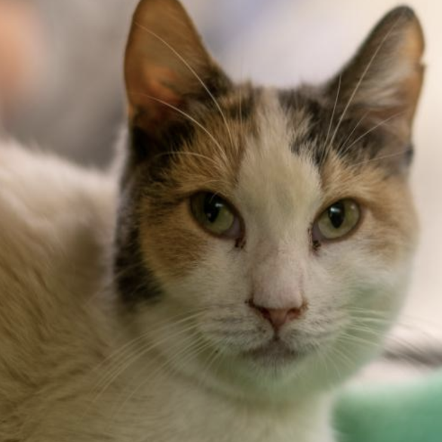
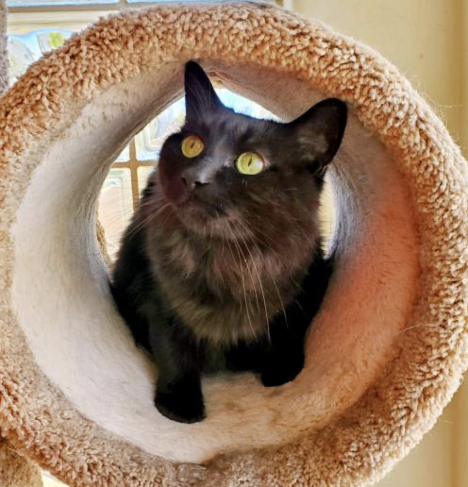
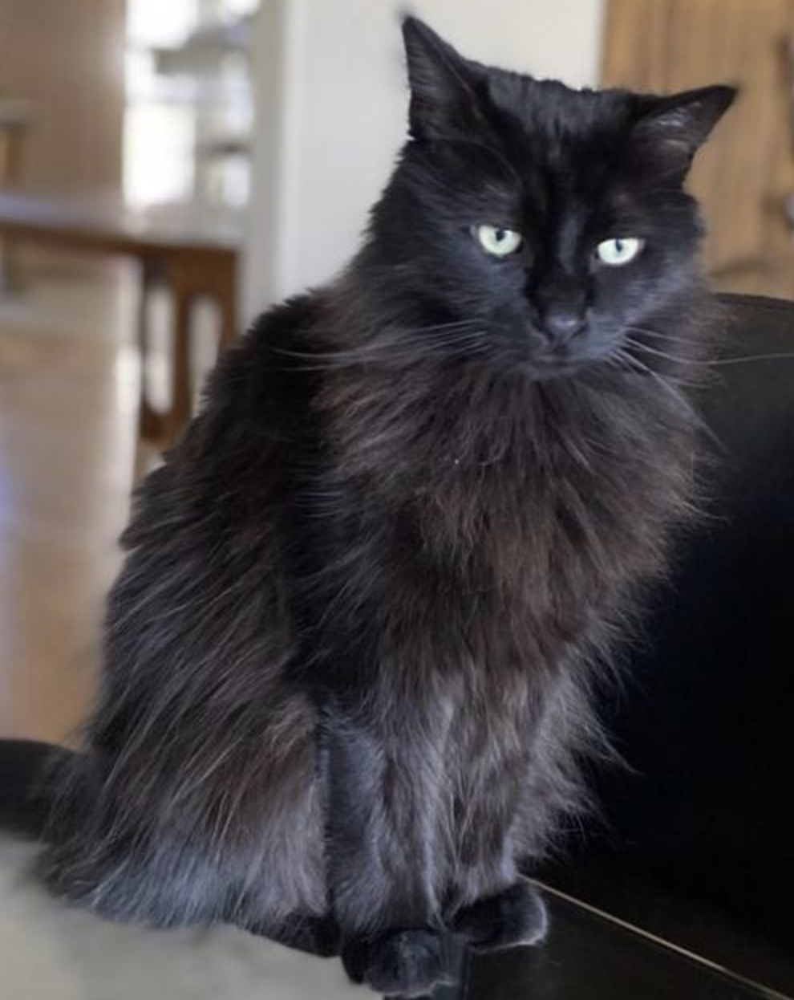

Clarice
About
Clarice was rescued from the streets of Phoenix. She was very thin and clearly was near starvation.
She has been in a loving foster home and is now her normal weight. She is not a lap cat, but is very sweet. She does very well with other cats and would probably do well with a dog after a slow introduction.
- Status: Available for Adoption
- Adoption Fee: $75
- Rescue ID: C190033
- Color: Spotted, White
- Current Age: 8 Years
- Microchipped: Yes
- Declawed: No
- Housetrained: Yes
Elle Belle
Elle Belle was rescued from outside where she was being fed by a kind cat person.
Elle Belle is very sweet but will need time and patience to trust new people. Once she is comfortable, she is very cuddly.
- Status: Available for Adoption
- Adoption Fee: $100
- Rescue ID: C200054
- Color: Brown Tabby
- Current Age: 2 Years
- Microchipped: Yes
- Declawed: No
- Housetrained: Yes
Flower
Flower was found outdoors after being dumped by her previous owners, and Paw Placement was contacted to help her find a new forever home. Paw Placement located fosters for this sweet girl even though they were full where she has been in foster since her rescue. Flower was reserved at first, but over time has found trust in humans again and doesn't hold any grudges.
Flower is a very pretty girl who has medium fur, which is very soft. Not a lot of grooming with this girl, because she likes to look her best at all times. This girl also loves playtime and one of her favorite games is an online application called "FISH", which will keep her and her adopter entertained while she masters her gaming skills. Check out her video to see how skilled she is playing FISH.
- Status: Available for Adoption
- Adoption Fee: $100
- Rescue ID: C190027
- Color: White and Gray
- Current Age: 1 Years
- Microchipped: Yes
- Declawed: No
- Housetrained: Yes
Jimbo
Jimbo was living in a shopping center on Scottsdale Road and Shea. That’s a busy intersection and not a safe place for such a trusting kitty. A store employee fed him and made sure he was safe and we’re so happy to call him a Paw Placement cat!
Jimbo was seen by our vet and it was determined that needed a full mouth extraction. His teeth were in bad shape and must have been so painful. Jimbo did great with surgery and is eating like a champ. He feels much better and he’s enjoying life pain free with lots of food and a big kitty bed to sleep in comfort. Jimbo is a purry, biscuit-making, happy boy who loves people! He greets everyone he meets with a head butt and is such a gentle, loving boy. Jimbo would love to receive some adoption applications and he can’t wait to find his furever family!
- Status: Available for Adoption
- Adoption Fee: $100
- Rescue ID: C200041
- Color: Silver Tabby
- Current Age: 4 Years
- Microchipped: Yes
- Declawed: No
- Housetrained: Yes
Jayden
Hi my name is Jayden, and my brother's name is Marley (also known as Mann) and we have been together all our lives. Unfortunately, we found ourselves in an unfortunate situation where we lost our home, and are now in foster. We weren't sure what was going on, but are having fun with our foster mum due to us loosing our home. Our only requirement is that we need to be adopted together, because Marley will tell you we have history together, and have always looked out for each other. It would not be the same in a new forever home without each other.
Since coming to Paw Placement we have also been checked out by a vet, and he gave us a purrfect bill of health, and ready for our new home. We also have great kitty manners, and just love humans, so please come and meet us.
- Status: Available for Adoption
- Adoption Fee: $75
- Rescue ID: C190141
- Color: Black
- Current Age: 12 Years
- Microchipped: Yes
- Declawed: No
- Housetrained: Yes
Marley
Hi my name is Marley (also known as Mann), and my sisters name is Jayden. Just check out my photos, because I may look like a black cat, but the undertone color of my fur is absolutely amazing. Look at the sun shining in on my fur!!! I like to think I'm very a very handsome boy.
Jayden and I recently found ourselves in a predicament when we lost our home, and miss our owner, but are taking everything in our stride until we find another home. For now we are living in a foster home and feel safe again, which makes us feel safe, because we had no idea what was going on. We ended up in a foster home, and have been interacting with our foster mum daily, and she has seen what awesome cats we are. We absolutely love playtime (check the video out of my sister Jayden), and going up our very tall condo.
The only requirement I have is my sister Jayden and I have to be adopted together, because we have been together as kittens and don't want to be separated at this stage in life. cats. We have a lot of history and stories that we share and couldn't stand the thought of being separated. We absolutely love each other, which you will see and if you come and meet us.
- Status: Available for Adoption
- Adoption Fee: $75
- Rescue ID: C190140
- Color: Black
- Current Age: 12 Years
- Microchipped: Yes
- Declawed: No
- Housetrained: Yes